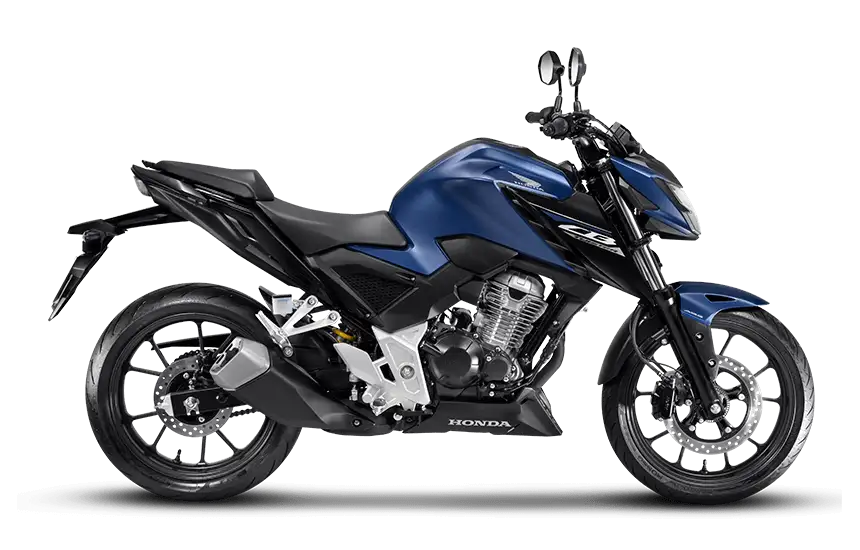
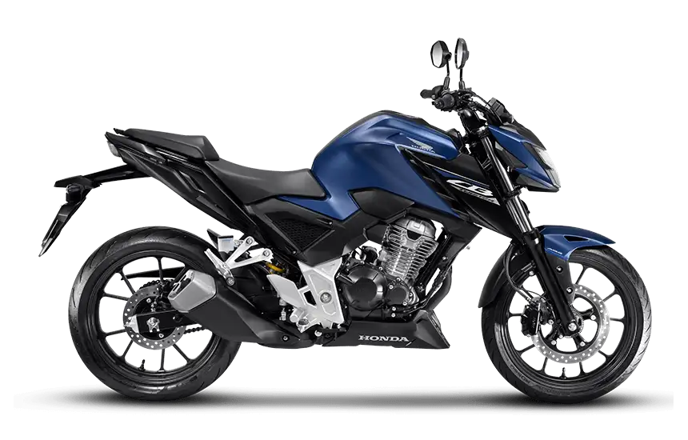
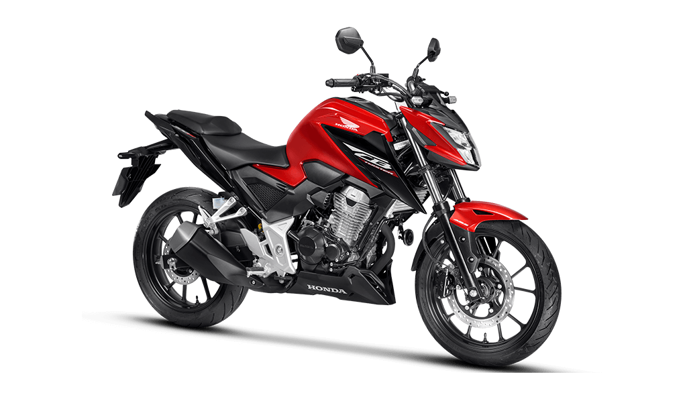
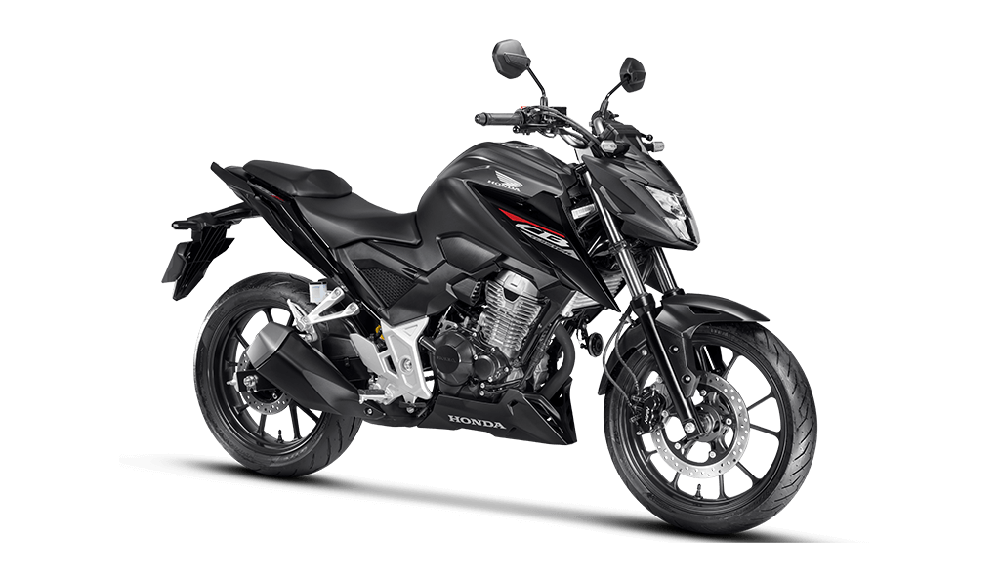

Acelere para o futuro e curta cada quilômetro,
Leve a vida numa Honda.
Confira as duas versões da Twister

DESTAQUE
CB 300F Twister ABS
CB 300F Twister ABS representa modernidade. Com um sistema de freios que oferece uma resposta precisa e controlada, esta versão entrega uma experiência de pilotagem avançada.
Potência Máxima: 18,0 kW (24,5 CV) a 7.500 rpm (Gasolina) / 18,2 kW (24,7 CV) a 7.500 rpm (Etanol) Torque Máximo: 25,6 N.m (2,61 kgf.m) a 5.500 rpm (Gasolina) / 26,2 N.m (2,67 kgf.m) a 5.500 rpm (Etanol) Combustível:Combustível: Gasolina / Álcool
